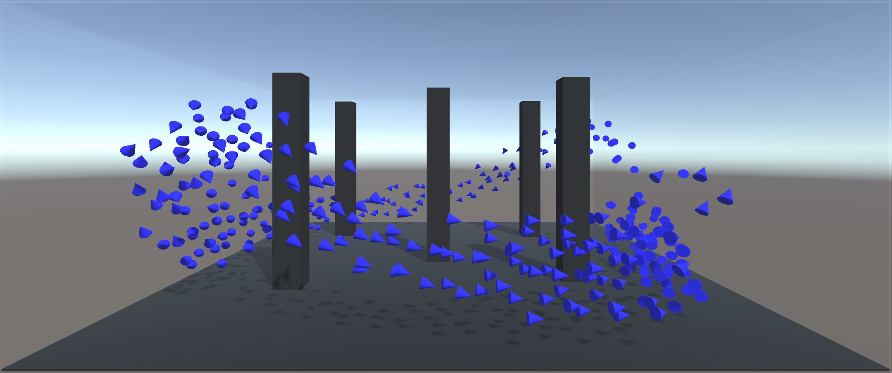
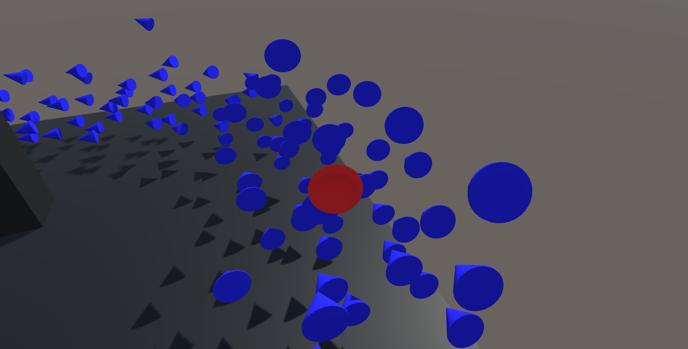
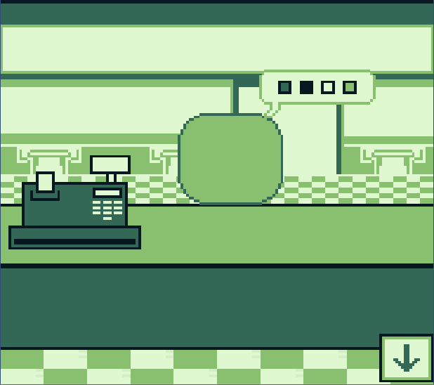
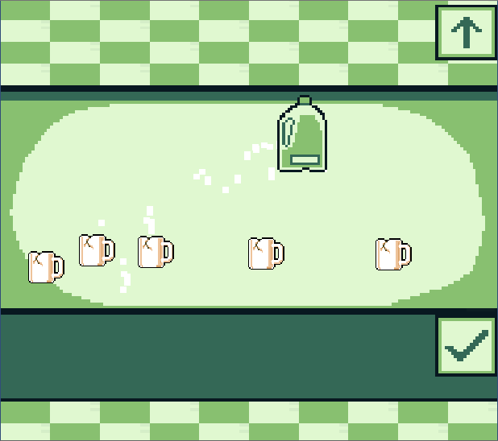
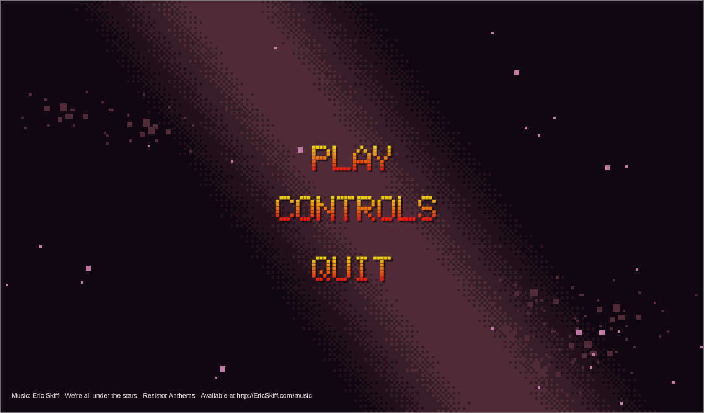
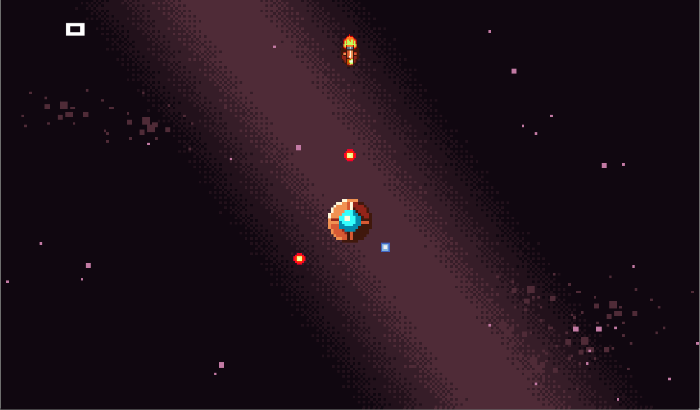
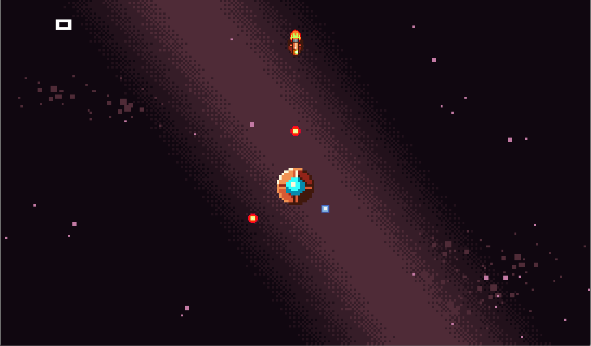
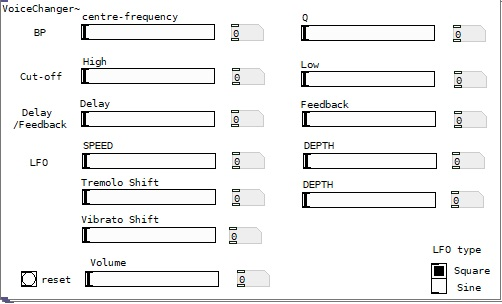

As part of my dissertation project I'm building a simulation in order to demonstrate animal swarms' natural behaviours using an agent based model. The goal is to eventually represent the Predator-Prey relationship between Gannets (fishing birds) and shoals of fish.
I thought this project would be an excellent opportunity to expand my knowledge of artificial intelligence.
Created in Unity3D (C#)


I modelled and animated a snowman in OpenGL. During this project I learned a lot about shaders, specular maps, scenegraphs, and using matrices for transforms and rotations.


Ever wanted to run an alien café? These lot are particular about their milk.
Frantically assemble orders to keep your business afloat, but don't take too long! And DEFINITELY don't get the order wrong!! These aliens aren't afraid to give you a piece of their mind.
Created in Unity2D (C#)
(The 4 colour restriction pays homage to my first console - the GameBoy!)

 

Change places, change colours, and fire back to score points!
Created in Unity2D (C#)
I Created a haskell program which takes a deck of cards as an input and automatically attempts to complete the game using an order or operations to perform.
This was my first time using any language like haskell, and I feel this project gave a great insight into the power of purely functional coding and it's heavy use of recursive functions.

I Created a voice changer that takes in either an audio file or live microphone feed and gives the user options to changer and synthesize this audio through a GUI.
Created in PureData